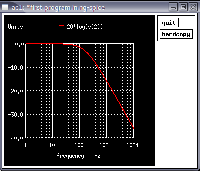
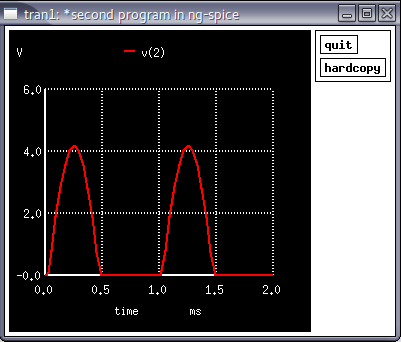
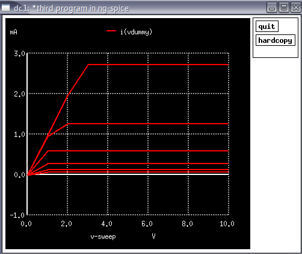

The role of Electronics Design Automation tools in electronics circuit design and implementation is crucial. The successful working o fabricated chip or PCB is mainly relay on the efficiency of EDA tools. SPICE tools are one among different EDA tools. There are many free, open source and commercial SPICE tools available eg. LTspice, NGspice, Pspice, Winspice, smart spice, TINA TI spice, Multisim etc. In this article, a brief tutorial on NGspice is presented. The syntax, structure of coding, model description, different analysis are explained with examples. The objective of the article is to make reader gets familiarised with basics of NGspice and use it for simple analog circuit simulation.
Presently ngspice-26 version is avalilable. For windows users it can be downloaded from the below link- https://sourceforge.net/projects/ngspice/files/ng-spice-rework/26/ For many Linux distroes, it is available in the respective OS main repositories. From package management software it can easily be installed. Ngspice is basically a command line driven spice engine though there are many graphical user interfaces available.
A spice code is written using a text editor [notepad or any linux text editors] and saved as name.cir or name.spi or name.ckt . Then the file is invoked from command prompt. The spice code can be run either in batch mode where soon after the program run, results are displayed or in interactive mode, in which after the program run, one has to write commands in the prompt to display the results. General stucture of code
The statements written after * are considered as comments. Following are a few examples of circuit description statements. For detailed explanation please refer the user manual.
DC:- Vname 1 2 dc=5
AC:- Vname 1 2 dc=0 ac=1
Sine:- Vname 1 2 dc=0 ac=1 sin(startvalue peakvalue freq)
Pulse:- Vname 1 2 dc=0 pulse(startvalue endvalue tdelay trise tfall Pw per)
1 2
+-------------vvv-------------+
| R |
(~) ---
| Vin C ---
| |
+--------------+--------------+
0
First Order RC network
*First program in NG-spice Vin 1 0 dc=0 ac=1 R1 1 2 1k C1 2 0 1u .control op ac dec 100 1 10k run plot 20*log(v(2)) .endc .end
1 2
+-------------D|--------------+
| diode |
(~) >
| R1 >
| Vin |
| |
+--------------+--------------+
0
First Order RC network
*Second program in NG-spice Vin 1 0 dc=0 ac=5 sin(0 5 1k) D1 1 2 mydio R1 2 0 1k .model mydio D(IS=1E-16 VJ=0.7) .control op tran 0.1m 2m run plot v(2) .end
In the above example, a diode is used whose model is explained in .model statement. IS refers to reverse saturation current and VJ refers junction potential voltage. The detailed model of a diode can be obtained from a spice manual. In control statement tran 0.1m 2m performs transient analysis fro 0s to 2ms with a step size of 0.1ms.
VCC
---
| 3
> R1
>
| 1
( ) Vdummy
| 2
|
4 R3 5 /
+-^^^------| Q1
| \
( ) Vin |
| |
--- ---
*Third program in NG-spice Vcc 3 0 dc=10 Vin 4 0 0.8 vdummy 1 2 R1 4 5 50k R3 3 1 1k Q1 2 5 0 mybjt .model mybjt npn(IS=1E-16 VJE=0.7 CJE=2.6734e-11 + CJC= 1.4040e-11 BF=200) .control op dc vcc 0 10 1 vin 0.7 0.8 0.02 run plot i(vdummy) .endc .end
In NGspice we can not plot current through components other than voltage source. Hence a zero voltage source is added in series with collector resistor. A model statement is added to describe the model of a typical npn BJT. Refer the spice manual for detailed explanation of each parameters listed in the model statement. In the control section, a nested DC sweep statement is added. Initially vin is kept at 0.7 V and Vcc is varied from 0V to 10V in step of 1 V and collector current is plotted. Then vin is increased by 0.1 V and again Vcc is varied, current curve is plotted. Like this, current curves are plotted for different values of vin as shown in Figure.
In this short tutorial, Simulation of basic electronic circuits using NGspice has been explained with examples. Ngspice is a very powerful tool, many complexed circuit analysis, optimization, statistical analysis etc can realised.